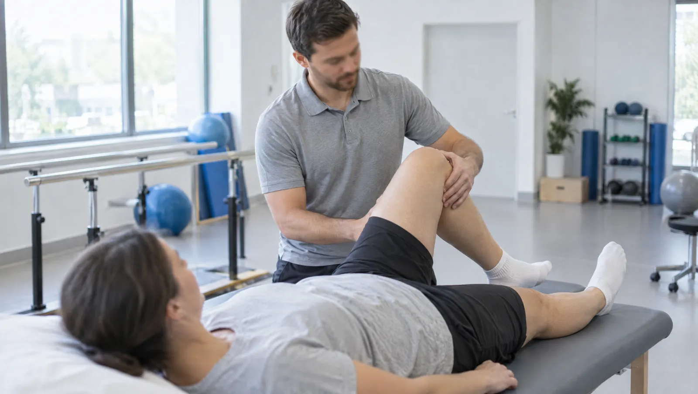

Rehabilitasyonun amacı: hareketi geri kazanmak
Fizik tedavi ve rehabilitasyon, ağrıyı azaltmayı ve kaybedilen hareketi geri kazandırmayı amaçlar. Bel, boyun, diz ve omuz ağrıları sık başvuru nedenleridir. Ameliyat, kırık ya da inme sonrası toparlanma dönemi de bu birimin alanıdır. Program, fizik tedavi uzmanının muayenesiyle başlar. Uygulamaları ise fizyoterapist yürütür.
Cihazlar ağrıyı yatıştırmada yardımcıdır ama iyileşmenin asıl yükünü egzersiz taşır. Bu yüzden seanslarda öğrendiğiniz hareketleri evde de düzenli yapmanız beklenir. Fizyoterapist hareketlerin doğru yapılıp yapılmadığını kontrol eder ve zorluk düzeyini adım adım artırır. Egzersiz sırasında hafif bir zorlanma olağandır. Keskin ya da giderek artan bir ağrı hissederseniz durun ve bunu seansta söyleyin.
Seans sayısı ve sıklığı, sorunun türüne ve ilerlemenize göre belirlenir. Örneğin diz protezi sonrası program haftalar sürebilir. Kısa süreli bir boyun tutulmasında ise birkaç seans yeterli olabilir. Program boyunca hekiminiz belli aralıklarla kontrol muayenesi yapar ve planı ilerlemenize göre günceller.

Fizik tedavi muayenesi için doğru zaman
- Birkaç haftadır geçmeyen bel ya da boyun ağrısı
- Bacağa ya da kola yayılan ağrı ve uyuşma
- Merdiven inerken ya da çömelirken artan diz ağrısı
- Kolu baş hizasının üzerine kaldıramamak, gece artan omuz ağrısı
- Ameliyat ya da alçı sonrası eklemde hareket kısıtlılığı
- İnme sonrası kol ya da bacakta güçsüzlük, yürüme güçlüğü
- Sabahları uzun süren eklem tutukluğu
- Masa başı çalışmaya bağlı ağrı ve duruş bozukluğu
Acil durumda beklemeyin
Bel ağrısına idrar ya da dışkı kaçırma eşlik ediyorsa dikkat edin. Kasık ve makat çevresinde uyuşma ya da bacaklarda hızla artan güçsüzlük de aynı önemdedir. Bu belirtiler ilerlemiş bir sinir sıkışmasını gösterebilir. Fizik tedavi randevusunu beklemeden 112'yi arayın ya da acil servise başvurun.
Rehabilitasyon programı uygulanan sorunlar
- Bel ve boyun fıtığı
- Kireçlenme (osteoartrit)
- Omuz sıkışma sendromu ve donuk omuz
- Tenisçi dirseği gibi tendon iltihapları
- Topuk dikeni ve ayak tabanı ağrısı
- Kas ve bağ yaralanmaları
- Diz ve kalça protezi sonrası dönem
- Kırık sonrası hareket kısıtlılığı
- İnme sonrası rehabilitasyon
- Fibromiyalji
- Duruş bozuklukları
- Kemik erimesinde düşme riskini azaltma
Programda kullanılan tedavi yöntemleri
Terapötik egzersiz
Kas gücünü, esnekliği ve dengeyi artırmaya yönelik, size göre hazırlanan egzersizler. Ev programının temelini oluşturur.
- Hazırlık
- Rahat giysi ve spor ayakkabı getirin
TENS ve elektroterapi
Cilde yapıştırılan elektrotlardan verilen hafif akımla ağrı sinyalleri azaltılmaya çalışılır. Uygulama sırasında karıncalanma hissi olağandır.
- Hazırlık
- Kalp piliniz varsa önceden söyleyin
Terapötik ultrason
Ses dalgalarının dokuda oluşturduğu derin ısı, tendon ve kas sorunlarında yardımcı olarak kullanılır.
- Süre
- 5-10 dakika
Sıcak ve soğuk uygulama
Sıcak paket kası gevşetir. Soğuk uygulama ise yeni yaralanmalarda şişliği azaltır. Genellikle egzersizden önce ya da sonra yapılır.
- Süre
- 15-20 dakika
Manuel terapi
Fizyoterapistin elleriyle eklem ve yumuşak dokulara uyguladığı mobilizasyon ve germe teknikleri.
Denge ve yürüme eğitimi
İnme sonrasında ya da düşme riski olan kişilerde güvenli yürümeyi ve denge kontrolünü geliştiren çalışmalar.
- Hazırlık
- Günlük ayakkabınızı ve varsa baston ya da yürütecinizi getirin
Seanslara gelirken yanınıza alın
- Hareket etmenizi kısıtlamayan eşofman ya da tayt ve spor ayakkabı
- Daha önce çekilmiş röntgen ve tomografi raporları
- Ameliyat olduysanız epikriz ve cerrahınızın hareket kısıtlamalarıyla ilgili notları
- Kullandığınız ağrı kesici ve kan sulandırıcı ilaçların listesi
- Hangi hareketlerde ağrınızın arttığına dair kısa notlar
Fizik Tedavi hekimleri

Egzersiz programına başlamadan önce merak edilenler
Egzersiz sırasında ağrı hissedersem devam etmeli miyim?
Hafif bir zorlanma ve ertesi gün geçen kas yorgunluğu beklenen bir durumdur. Keskin, batıcı ya da seanstan sonra saatlerce artan ağrı ise bir uyarıdır. Böyle bir ağrıda hareketi bırakın ve fizyoterapistinize söyleyin. Zorlanmanızı 0-10 arasında puanlamak, programın ayarlanmasını kolaylaştırır.
Bel fıtığım var, ameliyat olmadan fizik tedavi yeterli olur mu?
Bel fıtıklarının önemli bir kısmı ameliyatsız yöntemlerle izlenir. Fizik tedavi, egzersiz ve ağrı yönetimi bu izlemin parçası olabilir. Hangi yolun size uygun olduğuna muayene, görüntüleme ve şikâyetlerinizin seyri birlikte değerlendirilerek karar verilir. Örneğin ağrı haftalar içinde azalıyorsa ameliyatsız yolla devam etmek mantıklıdır. Buna karşın idrar kaçırma ya da bacakta ilerleyen güç kaybı gibi bulgular varsa cerrahi görüş alınır. Fizik tedavi hekiminiz bu ayrımı muayenede yapar ve gerekirse sizi ilgili branşa yönlendirir.
Evde egzersiz yapmazsam ne olur?
Seanslarda kazandığınız ilerleme yavaşlar ve şikâyetler daha kolay geri döner. Haftada birkaç saatlik seans, günün geri kalanındaki duruş alışkanlıklarını kendi başına değiştiremez. Ev programı bu yüzden kısa ve uygulanabilir tutulur.
Fizik tedaviye başlamak için hekim muayenesi gerekli mi?
Evet. Programı fizik tedavi ve rehabilitasyon uzmanı muayeneden sonra planlar. Hangi yöntemlerin size uygun olduğu, hangilerinden kaçınılacağı bu muayenede belirlenir. Örneğin kalp pili, gebelik ya da bazı cilt sorunları bazı cihazların kullanımını engeller.
İnme sonrası rehabilitasyona ne zaman başlanır?
Genel durum elverdiğinde, çoğu zaman ilk günlerde yatakta başlanır. Erken başlamak eklem sertliği ve kas kaybı gibi sorunları önlemeye yardım eder. Başlama zamanına nöroloji ve fizik tedavi hekimleri birlikte karar verir.
Bu sayfayı Uzm. Dr. Sinan Okur gözden geçirdi. Son güncelleme: 7 Ekim 2026.